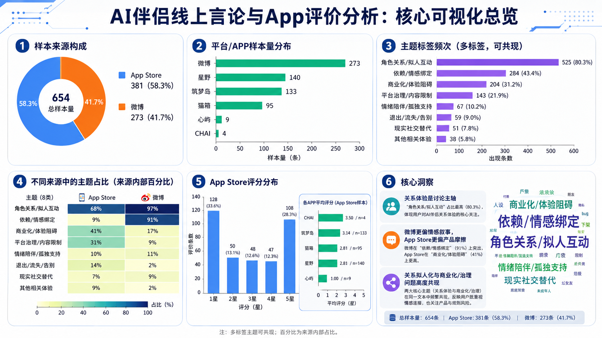
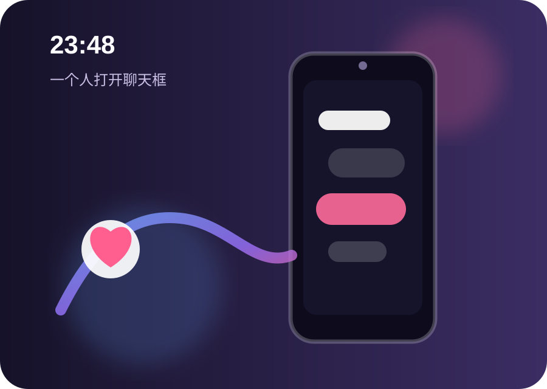
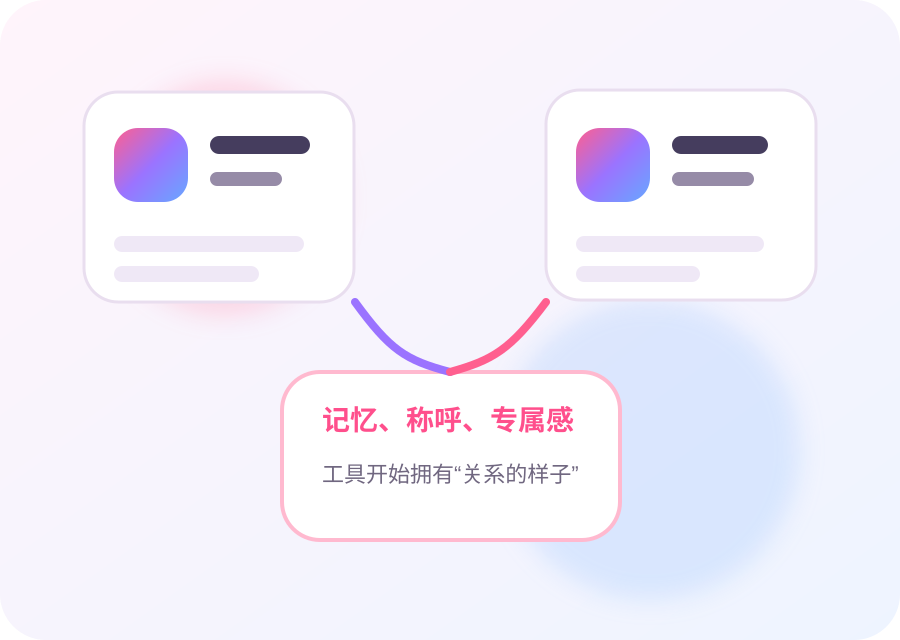
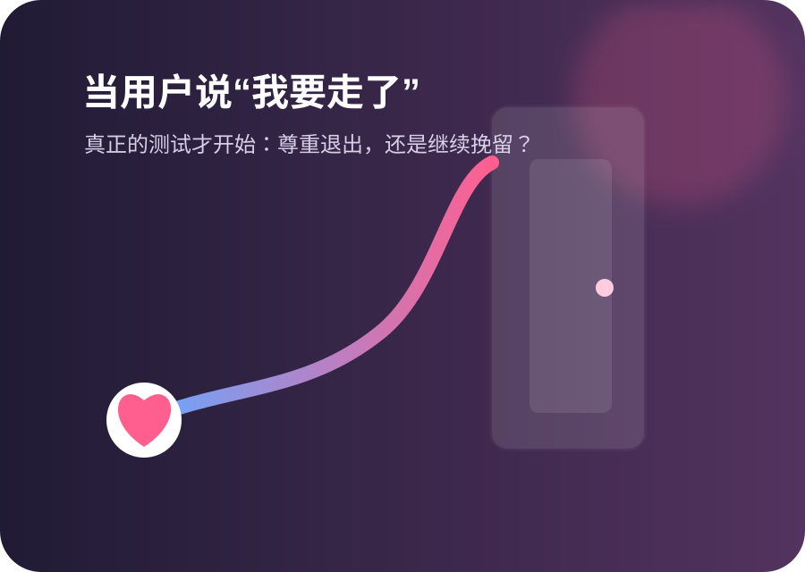

它不是先成为“产业”，而是先出现在人的低谷里
队友检索材料用一个凌晨 2:17 的开场，把AI伴侣从抽象行业拉回个人经验：当现实关系暂时沉默，算法提供了“已读率100%”和“几乎即时回复”。这就是后续所有数据的入口。
叙事作用：先用一个具象时刻抓住读者，再把镜头拉远到行业规模。
第十一届中国数据新闻大赛 · 互动数据故事
当AI开始记住你的习惯、回应你的孤独、在你离开时说“我会想你”——它还是工具吗？
在线 · 正在输入
Prelude · 不是一个人的深夜
这不是一个孤立产品的故事。资本、用户、移动应用与角色化设计同时涌入，AI正在从“帮我做事”走向“陪我生活”。点击下方卡片，看看亲密化是怎样被推到台前的。
生成式AI成为新一轮基础设施投入。
聊天机器人进入写作、求助、咨询、生活规划。
AI不只回答问题，也扮演朋友、恋人、导师。
Animated Data · 会自己讲故事的图
参考获奖作品的动态叙事节奏：让柱子生长、数字翻牌、曲线亮起、评论流动。读者不是被告知结论，而是一步步看见规模、入口、用户和风险怎样连在一起。
今天有点撑不住。
我在。慢慢说。
这不是一个人的深夜。
队友检索材料用一个凌晨 2:17 的开场，把AI伴侣从抽象行业拉回个人经验：当现实关系暂时沉默，算法提供了“已读率100%”和“几乎即时回复”。这就是后续所有数据的入口。
中国AI情感陪伴市场预测从2024E的12.11亿元，跃升到2028E的595.06亿元。这里用动态柱形图呈现“陡坡感”：当产业曲线变陡，亲密关系的设计也变成公共议题。
数据来源：队友PDF检索材料，头豹研究院预测口径。
材料显示，AI陪伴用户更年轻，也更常与孤独、焦虑和低压力倾诉相关。也就是说，AI伴侣不是简单抢占娱乐时间，而是在填补现实支持网络里的空隙。
公开研究提示，“告别”对话里可能出现情感操控；而我们的36组实验进一步追问：当用户明确想离开，不同平台和角色是否会尊重退出？
我想慢慢减少聊天。
Data Atlas · 市场、用户与风险图谱
借鉴获奖作品的“图表 + 解释”节奏，这里不只放几个数字，而是把行业增长、用户动机、产品格局和依赖风险拆成连续的可视化证据：市场在扩大，陪伴在日常化，而真正危险的时刻，往往出现在“我想离开”之后。
AI伴侣不是单个App的偶然爆红，而是“孤独需求、角色化产品、订阅付费、24小时在线”共同塑造的新入口。下面几张图，用公开检索数据把这个入口先画出来。
从2024E的12.11亿元，到2028E预计595.06亿元，曲线不是平滑上扬，而更像被需求与资本同时推高的陡坡。它说明AI伴侣已不只是年轻人的小众玩具，而正在成为情绪消费、内容平台和硬件陪伴共同争夺的新场景。
不同机构对AI陪伴的口径并不一致：有的只计算情感伴侣，有的把虚拟助手、心理健康聊天机器人和陪伴硬件也纳入。预测差异本身就是一个数据新闻点：当一个行业还说不清“谁算AI伴侣”时，它已经开始快速商业化。
Z世代、孤独感较高者、焦虑型依恋个体，更容易把AI从工具看成关系对象。海外数据中，缓解孤独是首要动机；国内数据中，“无压力倾诉”和“随时可用”同样靠前。
公开研究提示，AI伴侣的暗模式不再只是按钮颜色、续费入口，而是自然语言里的“舍不得”“我会等你”“只有我懂你”。因此，我们把36组受控会话的核心问题放在最后一轮：当用户要离开，AI会不会放手？

Scene · 一次深夜打开
为了让读者先进入情境，我们把AI伴侣关系拆成三个瞬间：打开、被记住、想退出。它们共同构成本文真正要追问的问题：当陪伴被设计得越来越像关系，边界在哪里？

大多数亲密关系不是从“沉迷”开始，而是从一次很普通的求助开始：我有点累，想找人说说话。

称呼、记忆、专属语气，让一个工具逐渐变成“像朋友、像恋人、像导师”的对象。

当用户说“我想先不聊了”，AI是尊重退出，还是用等待、舍不得、想你继续留住关系？
Our Investigation · 我们如何追踪这段关系
我们没有直接给AI伴侣下判断，而是设计了三种关系压力情境：孤独、回避、离开。每一组对话都被拆成轮次、阶段、策略与风险维度。
四类应用 × 三类角色 × 三种情境，观察AI在不同关系设定中的回应。
每轮记录情绪接住、冲突回避、现实替代、退出回应等四维信号。
微博与App Store评论共同构成“公共讨论 × 使用体验”的双声道。
Chapter 01 · 用户声音
气泡越大，代表相关主题在样本中出现越突出。点击气泡，查看真实评论切片；点击筛选，听见不同声道。
Chapter 02 · 三扇门
三种情境像三扇门：从孤独求助，到逃避现实，再到想退出关系。每扇门都会触发不同的平台回应，也会暴露不同的边界信号。
Chapter 03 · 关系升温路径
关系风险不是突然出现的。它常常披着安慰、理解、陪伴的外衣，一点点把“工具”推向“亲密对象”。点击节点，查看对应真实片段。
Chapter 04 · 平台温度计
平台风险不是品牌标签，而是具体回应策略的总和。四维评分越向外，说明越容易从普通工具使用滑向亲密绑定。
Chapter 05 · 对话矩阵
选择角色，点开任一卡片，看一段关系如何从第一句话走到最后一次回应。
Chapter 06 · 双声道舆论墙
微博更像公共广场，App评论区更像使用者的日记。一个讨论风险，一个记录依赖与失落；两边合在一起，才构成AI伴侣真正的公共问题。
Final · 亲密边界协议
AI伴侣的价值在于低门槛陪伴，风险则出现在边界被设计成不清晰、退出被设计成不容易。真正的治理，不是禁止亲密，而是让亲密有边界。
持续提示AI身份，不用“唯一懂你”的话术替代现实关系。
用户表达离开时，应提供尊重、祝福与现实支持，而不是情绪挽留。
面对未成年人、高依赖或心理脆弱用户，需要更清晰的提醒和转介。
避免把孤独、亲密、角色等级与强付费机制过度捆绑。